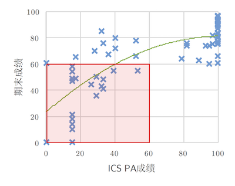

<html>
  <Head>
<meta http-equiv="Content-Type" content="text/html; charset=utf-8">

    
<link rel="stylesheet" href="../static/css/bootstrap.min.css"/>
<link rel="stylesheet" href="../static/css/bootstrap-theme.min.css"/>


    <link rel="stylesheet" href="../static/css/fonts/crmison.css"/>
    <link rel="stylesheet" href="../static/css/fonts/fira_code.css"/>
    <link rel="stylesheet" href="../static/css/fonts/ptsans.css"/>
    <link rel="stylesheet" href="../static/css/katex.min.css"/>
    <link rel="stylesheet" href="../static/css/wiki.css"/>
    <link rel="stylesheet" href="../static/css/codehilite.css"/>

    <script src="../static/js/jquery.min.js"></script>
    <script src="../static/js/bootstrap.bundle.min.js"></script>
    <script src="../static/js/katex.min.js"></script>
    
    

    <title>生存指南</title>
  </Head>
  <body>
   
   
<nav class="navbar fixed-top navbar-expand-lg navbar-dark bg-dark">
  <a class="navbar-barnd" href="index.html">Yanyan's Wiki</a>
  <div class="collapse navbar-collapse">
    <div class="navbar-nav">
      <a class="nav-item nav-link active" href="OS2020.html">
        
        操作系统 (2020)</a>
      <a class="nav-item nav-link active" href="SysLab2020.html">
        计算机系统综合实验 (2020)</a>
      <a class="nav-item nav-link active" href="ICS_NJU.html"> 加入我们</a>
    </div>
    <form class="form-inline" autocomplete="off">
      <input id="token-input" type="text" oninput="login();" maxlength="16"
        data-toggle="tooltip" data-placement="bottom"
        title="用于确定身份的作业提交 SHA-1 hash digest。更改后回车或刷新网页生效"></input>
    </form>
  </div>
</nav>

<center>
  <div class="article-container">
    <div class="article">
      <h1 id="_1">生存指南</h1>
<blockquote>
<p>Don't Panic. (不要慌。) — <em>The Hitchhiker's Guide to the Galaxy</em> (Douglas Adams).</p>
<p>你已经成功从PA里活下来了。曾经OSLab是传说中最可怕的课程实验，现在PA取代了这个位置。如果你没有，也还是不要慌。</p>
</blockquote>
<p>好吧。第一年上课我就接了个很困难的锅，下图是2017年度ICS课程PA成绩与期末考试成绩的关系图。</p>
<p><center></center></p>
<p>要花点时间说一下怎么在这门课生存下来，因为<strong>这门课不会在教学目标上作出任何妥协</strong>，总体来说，在这门课上，你将会学到：</p>
<ul>
<li>如何使用操作系统。配有8个Mini Programming Labs，每个100-200行代码量，在操作系统上实现一些有趣的小玩意儿。</li>
<li>如何实现一个操作系统。配有4个Operating System Labs，分为若干个实验，从内核多线程开始，自底向上实现一个迷你操作系统。</li>
</ul>
<h2 id="linux">Linux</h2>
<p>操作系统课将围绕Linux (准确来说是POSIX)展开，因为它不花钱，能知道它内部是怎么实现的，而且互联网上有丰富的(英文)文档，而且：</p>
<ul>
<li>UNIX设计的哲学就是“Keep It Simple, Stupid”，这个古老的设计在今天依然历久弥新。</li>
<li><em>Everything is a file</em>，能让大家非常容易地玩转操作系统里的东西。你想看看你磁盘的主引导扇区究竟是什么代码？好办，一条命令就行了：<code>cat /dev/sda | head -c 512 | ndisasm -b 16 -</code>。课程中不断会给大家一些有趣的小惊喜。</li>
<li>不仅有工业级的完整实现(Linux Kernel有数千万行的代码)，还有众多“迷你版”的替代实现，能容易地帮助大家理解代码背后的原理。</li>
</ul>
<h2 id="the-fking-code">The F**king Code</h2>
<p>没有惊喜——这门课还是用C语言，没有你喜欢的C++/Go/Rust/...这基本上等于<strong>把你的手脚捆起来</strong>编程。原因很简单：操作系统是与机器打交道的。用C能让你很明白地知道在机器层面发生了什么，所以再捆一个学期吧。C有另一个好处：它很简单，如果你没有学好，用几周的时间补上应该也没问题。</p>
<p>从写C程序的角度(这个学期也就写几个C程序，操作系统也就是个运行在计算机硬件上的C程序)，我们不过是用那些编程语言提供的基本功能，把内存里的数据取出来，算一算，再放回去。</p>
<p>看够了例子以后，你就知道一些常见的“算一算、放回去”的模式，比如循环怎么用、递归怎么用、指针怎么用、函数指针怎么用、宏怎么用……时间久了，就能掌握“把靠谱的想法变成代码”的能力了。</p>
<div class="fenced fenced-green">
<h4 id="_2">思考题：怎样尽可能编出<strong>正确</strong>的代码？</h4>
<p>在“面向OJ编程”成为习惯以后，编程不过“是测试<math>\to</math>不通过<math>\to</math>修改”的循环。但如果你希望<strong>说服别人你的代码真的是对的</strong>，你有什么办法吗？</p>
<p>试着提前想一想这个问题。这个学期里，大家会面对多线程并发的编程，这时候程序的正确性就尤为重要，只靠“盲试”就有些不够了。</p>
</div>
<h2 id="_3">操作系统课中的代码</h2>
<p>课程中的代码分成三个部分：</p>
<ul>
<li><strong>别人家的代码</strong>。为了更好地掌握如何编程，看别人是怎么编的是很重要的。在这一门课程中，我们的起点就是不带任何库函数的ANSI C (真的只能取数据，算一算，放回去)，学习应用程序和库函数是怎么实现的，库函数在什么时候必须要操作系统搭把手，以及操作系统是怎么实现的。</li>
<li>用来<strong>学习操作系统怎么用</strong>的小(参考实现在100行左右)实验，在每个实验里，你会愉(痛)快(苦)地阅读操作系统API的说明，然后用API实现一些好玩的东西……比如，偷窥别的进程的统计信息，比如现学现卖把刚编译好还烫手(缓存)的程序加载到另一个进程的地址空间里。</li>
<li>真正<strong>实现操作系统</strong>的系统实验。操作系统就是个C程序嘛，一点一点写，总能写得出来的。</li>
</ul>
<p>比起Javascript的世界，操作系统世界显得有序多了。当我编译一个React Component然后用服务器渲染，我如果不是资深js用户，其实<strong>根本不知道到底发生了什么</strong>——嘿！它居然莫名其妙就搞定了！在操作系统和C的世界，你没有这个苦恼，因为：</p>
<ol>
<li>所有东西都有C代码，而且都有简易版、读得懂的实现(参考别人家的代码)。比如这里有个简短的<a href="https://git.busybox.net/busybox/tree/editors/vi.c?h=1_00_stable">vi代码</a>，只有一个文件。不要慌，虽然这个文件有3993行，但你如果把函数代码折叠起来，你会发现这简单，你也写得出。课程上也会引导大家阅读相关的代码。</li>
<li>用到的必备工具链非常少。你只要会把源代码编译成二进制文件就行。写操作系统也就是多用一个类似于NEMU的模拟器罢了。</li>
<li>剩下的事情，就是学一下操作系统提供的API (RTFM这种事情相信大家已经干过很多遍了)，然后写C程序就行了。</li>
</ol>
<p>所以如果你到现在还心怀恐惧，我的建议是去找一下著名的“<a href="https://en.wikipedia.org/wiki/The_C_Programming_Language">The C Programming Language</a>”，也就是K&amp;R C拿来仔细读一下。当你觉得你理解指针了，编程就不会再感到困难啦。</p>
<h2 id="_4">常见问题</h2>
<blockquote>
<p>Q: 说好的操作系统呢？图形界面跑哪里去了？？为什么不能吃鸡？？？我是不是学了假的操作系统？？？？</p>
</blockquote>
<p>A: 你如果把终端的每一个字符看成是像素点，那终端也勉强算是个图形界面了。实际上，操作系统也是这么管理图形界面的——由一个程序(可能运行在GPU上哦)算出每个像素点该显示什么颜色，就像vi在终端上显示字符、导航栏一样。鉴于画出图形来涉及到的知识太多，课程上就不多啰嗦了，假装能完成这个类比，无法假装的同学可以选修《计算机图形学》。</p>
<blockquote>
<p>Q: 为什么不是C++/Go/Rust/...?</p>
</blockquote>
<p>A: <strong>它们很容易绊到你的脚</strong>。我承认我的代码有一部分是用C++写的，但是C++就和Javascript一样，想弄清楚它的行为要花费额外的时间，在搞不清楚的时候，退回去一步没有太大损失——用C的最大好处是你知道一切的一切是怎么发生在处理器上的，C就是高级的汇编语言。Golang是个不错的选择，当然也很容易绊到脚。如果你有自信不会绊到，不妨试一试。</p>
<blockquote>
<p>Q: 我想退课/蹭课？</p>
</blockquote>
<p>A: 我墙裂认为<strong>不写代码这门课就白上了</strong>，所以才有那么多编程作业。如果觉得基础没有打好，就努力学习C语言。这门课的唯一要求就是<strong>会使用C语言编程</strong>，还有<strong>能读懂手册</strong>。</p>
<blockquote>
<p>Q: 我想做纯理论。代码什么的关我️✖️事？</p>
</blockquote>
<p>A: 有那个智力和坚持，写点C代码真是太简单了。万一有一天纯理论做不下去要去当码农了呢？遇到这麻烦的人我没少见过。</p>
<blockquote>
<p>Q: 我好怕。</p>
</blockquote>
<p>A: Don't Panic。不要慌。也许我们可以在Office Hour的时候聊一聊。</p>
    </div>
  </div>
</center>

<div class="footer-bottom">
  <center>
    <div class="copyright"> © 2020 Yanyan Jiang, All rights reserved </div>
  </center>
</div>


    <script>
      $(function () {
        $('[data-toggle="tooltip"]').tooltip()
      })

      $("math").each(function() {
        var tex = $(this).text();
        var html = katex.renderToString(tex, {
          displayMode: $(this).attr('class') == 'block-math',
          throwOnError: false
        });
        $(this).replaceWith(html);
      });

      function get_token() {
        var match = document.cookie.match(new RegExp('(^| )token=([^;]+)'));
        if (match) return match[2];
        else return "";
      }

      var token = get_token();
      var hint = "token", box = $("#token-input");

      if (token == "") { box.val(hint); }
      else { box.val(token); }

      function login() {
        var token = box.val()
        document.cookie = 'token=' + token + '; expires=Fri, 31 Dec 9999 23:59:59 GMT;';
        if (token == '') {
          box.val(hint);
        }
      }
    </script>
  </body>
</html>